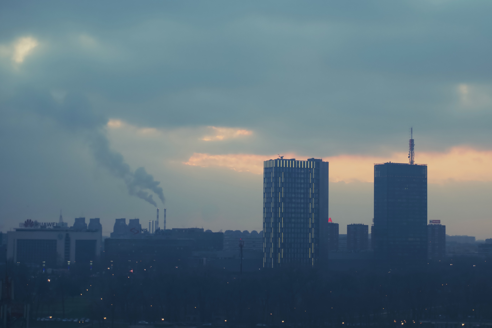
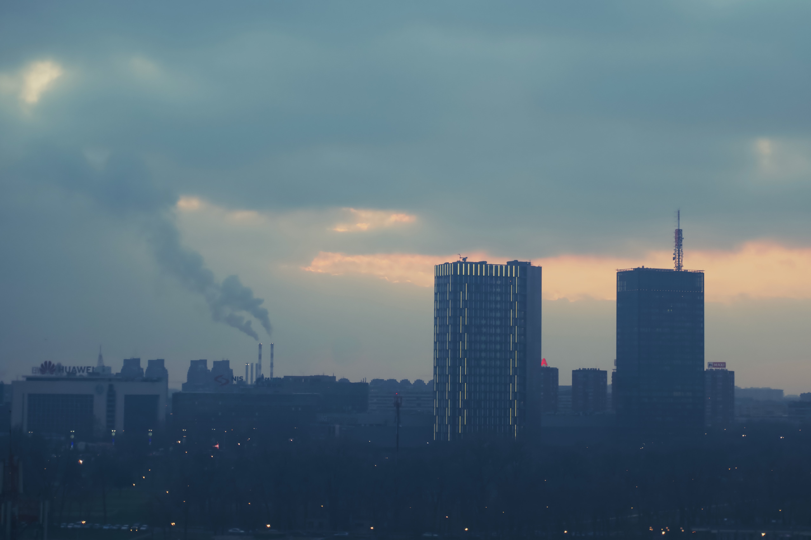

Be protect, Be clean
 

Bienvenue sur E-State, découvrez la face cachée des réseaux sous un angle inédit : la pollution numérique des états.
Depuis la création d’internet dans les années 60, les modes de communications, de travail, de détente se sont multipliés. Chaque jour nous comptons toujours plus d’internautes surfant sur le Web, utilisant un matériel toujours plus performant, toujours plus puissant. Nombreux sont les acteurs du Web, du simple particulier aux plus grands états. Nombreux sont les acteurs du Web, du simple particulier aux plus grands états. Pour ce qui est des particuliers cela nous est plus aisé de connaître la dépense énergétique et l’impact environnemental. Mais pour ce qui est des états, nous ignorons la quantité de ressource qu’ils utilisent. C’est pourquoi il devient important d’en parler, de connaître d’abord les différentes interactions des états et ensuite de réfléchir sur l’impact de ce système sur l’environnement. Pour illustrer cela, nous aurons comme base de réflexion le film de Oliver Stone, Snowden.
Une histoire
Snowden met en évidence la surveillance de masse, il est qualifié de lanceur d’alerte, il met sa vie en danger pour ouvrir les yeux du monde entier…
Bonne lecture !